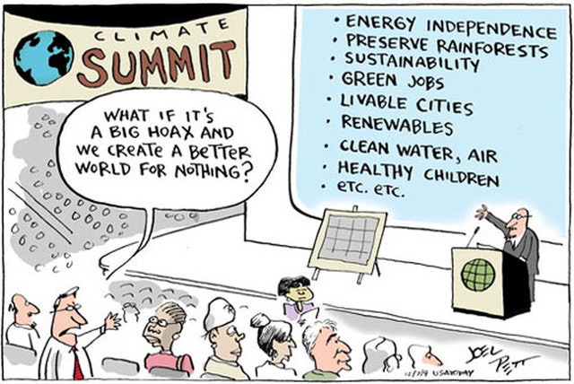
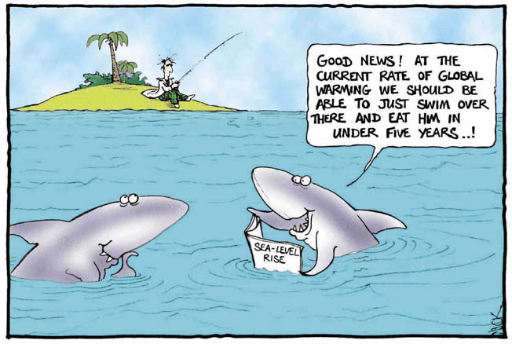

Genesis 1:6-7
And God said, “Let there be an expanse in the midst of the waters, and let it separate the waters from the waters.” And God made the expanse and separated the waters that were under the expanse from the waters that were above the expanse. And it was so.
Assignments this week:
Apologia hyperlinks for module 2:
p. 26 in the SNB: link.apologia.com/ECPS2N/2.1 The Greenhouse Effect by the University Corporation for Atmospheric Research
Required for APSci:
A Climate Minute - The Greenhouse Effect
The Greenhouse Effect by Bozeman Science
A great 8 ½ minute lesson about the greenhouse effect.
After the video, if you want to check out the greenhouse gas simulation, here it is.
Global warming from 1880 to 2015 from NASA
Optional but Helpful:
Vocabulary Flashcards on Quizlet
Module 2 flash cards
